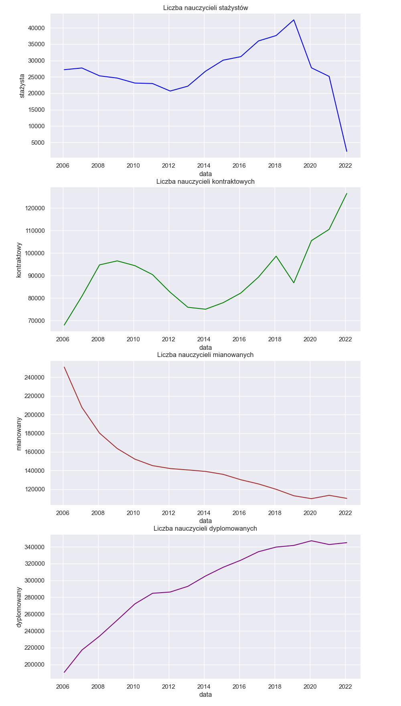

Polscy nauczyciele - ile ich jest, ile zarabiają?
Czy w Polsce brakuje nauczycieli? Jak wyglądają zarobki nauczycieli? Na te pytania postaram się odpowiedzieć w tym artykule za pomocą oficjalnych danych.
Treść artykułu:
- Liczba nauczycieli w latach 2006-2022.
- Minimalna stawka nauczycieli w latach 2006-2023.
- Zależność pomiędzy minimalną stawką a liczbą nauczycieli.
1. Liczba nauczycieli
2006-2022
W dzisiejszym artykule użyję danych ze strony https://dane.gov.pl.
Struktura danych wygląda następująco:
Krótki opis kolumn:
- Stan na dzień - kiedy zostały pobrane dane,
- osoby_etaty - są to dane kategoryczne (ang. categorical variables), więc występują tylko
takie
wartości jak:
- Osoby = Pełnozatrudnieni + Niepełnozatrudnieni
- Pełnozatrudnieni (użyte do wizualizacji) - oznacza to, że taka osoba pracuje przez cały standardowy czas pracy, który wynosi zazwyczaj 8 godzin dziennie przez 5 dni w tygodniu,
- Niepełnozatrudnieni - to znaczy, że taka osoba pracuje przez mniejszą liczbę godzin niż osoba pełnozatrudniona i nie ma zapewnionej pewności zatrudnienia,
- Etat - jest to liczba etatów, która odnosi się do liczby pełnych etatów pracy, jakie instytucja ma do dyspozycji. Określa ona liczbę nauczycieli zatrudnionych na pełny etat (pełnozatrudnionych), którzy pracują zazwyczaj 8 godzin dziennie przez 5 dni w tygodniu,
- Niewypełniony - liczba osób, które nie zaznaczyły rodzaju swojego stopnia zawodowego,
- Stażysta - nauczyciel stażysta,
- Kontraktowy - to nauczyciel zatrudniony na określony czas lub określony zakres przedmiotów,
- Mianowany - nauczyciel, który odbył przynajmniej 2 lata stażu, i zdał pozytywnie egzamin na nauczyciela mianowanego,
- Dyplomowany - posiada tytuł zawodowy na podstawie zdania egzaminu dyplomowego lub uzyskał stopień naukowy.
A tak wygląda liczba nauczycieli pełnozatrudnionych w latach 2006-2022:
Zaczynając od nauczycieli stażystów, ich liczba drastycznie zmalała. W roku 2019 było ich około 40 000, a w roku 2022 około 4000.
Liczba nauczycieli kontraktowych wzrosła w ostatnich latach. Jest to związane ze spadkiem liczby stażystów. Jak widać na wykresie w roku 2019, gdzie stażystów było najwięcej, liczba nauczycieli kontraktowych spadła. W późniejszych latach (2020-2022) ich liczba stale rosła, w związku ze spadkiem liczby stażystów. Zależność jest bardzo prosta, skoro jest mniej nowych nauczycieli, ich zadania muszą przejmować starsi nauczycieli już pracujący.
Później mamy nauczycieli mianowanych i dyplomowanych. Jak widać na wykresie te obydwie grupy są ze sobą wysoko powiązane, gdy jedna wzrasta, druga spada. Oznacza to, że liczba nauczycieli mianowanych maleje w związku z podniesieniem swojego stopnia zawodowego (z nauczycieli mianowanych stają sie dyplomowanymi). I przez to jest więcej nauczycieli dyplomowanych. Jeżeli nowych nauczycieli mianowanych nie przybędzie to liczba nauczycieli dyplomowanych w najbliższych latach będzie się zmniejszała.
2. Minimalna stawka nauczycieli
2006-2023
Zgodnie z danymi umieszczonymi na stronach rządowych. Dodatkowo postarałem się zdobyć informacje na temat zarobków dla kasjerów w supermarkecie Biedronka. Przykładowe minimalne stawki nauczycieli na podstawie lat wyglądały tak:
| rok | stażysta (początkujący) | kontraktowy | mianowany | dyplomowany | kasjer |
|---|---|---|---|---|---|
| 2006 | 1160 | 1375 | 1742 | 2090 | |
| 2009 | 1815 | 1869 | 2121 | 2492 | |
| 2010 | 2039 | 2099 | 2383 | 2799 | 1730 |
| ... | ... | ... | ... | ... | ... |
| 2019 | 2782 | 2862 | 3250 | 3817 | 2700 |
| 2020 | 2949 | 3034 | 3445 | 4046 | 3950 |
| 2022 | 3424 | 3597 | 4224 | 3950 | |
| 2023 | 3690 | 3890 | 4550 | 3950 |
Jak widać po powyższym wykresie, zarobki nauczycieli od lat albo rosną (2006-2012, 2018-2022) albo stoją w miejscu (2012-2016). A od paru lat kasjerzy w Biedronce na wejściu mogą sie szczycić minimalną stawką wiekszą od nauczycieli stażystów i mianowanych.
3. Zarobki i liczba nauczycieli
2006-2022
Jak wygląda związek płac z liczbą nauczycieli przedstawiono tutaj:

Widoczne wykresy wskazują to, że stawka przez lata była podnoszona, jednak nie spowodowało to aż tak drastycznego wzrostu w liczbie nauczycieli.
Wysokość płacy oczywiście nie jest jedynym czynnikiem, przez który liczba nauczycieli cały czas spada. Jest jednak ona jednym z głównych czyników kształtujących jej popyt i przy większych zarobkach na rynku pracy nauczycieli, byłaby większa konkurencja. A jak wiadomo, jeżeli na rynku jest duża konkurencja wybiera sie tych, którzy są najlepsi.
Podsumowując ten artykuł, liczba nauczycieli w ostatnich latach jest coraz mniejsza. Jeżeli tak dalej zostanie za kilka lat przyszli uczniownie mogą mieć problem z wykwalifikowaną kadrą nauczycieli, i za rozsądną edukację, będzie trzeba płacić.
Kod użyty do analizy
import pandas as pd
import seaborn as sns
import matplotlib.pyplot as plt
import matplotlib.dates as mdates
sns.set_context("notebook")
sns.set_style("darkgrid")
df = pd.read_csv('data.csv')
df = df.drop('0.Niewypełniony', axis=1)
df = df.drop(df[(df.osoby_etaty=='Osoby') | (df.osoby_etaty=='Etaty') |
(df.osoby_etaty=='Niepełnozatrudnieni')].index)
df['osoby_etaty'] = df['osoby_etaty'].replace({'Etaty': 'Razem'})
df.rename(columns={
'osoby_etaty': 'Rodzaj etatu',
'Stan na dzień': 'data',
'1.Stażysta': 'stażysta',
'2.Kontraktowy': 'kontraktowy',
'3.Mianowany': 'mianowany',
'4.Dyplomowany': 'dyplomowany',
'Razem': 'razem',
}, inplace=True)
df['data'] = pd.to_datetime(df['data'], format="%d.%y.%Y r.", errors='ignore')
zarobki = pd.read_csv('zarobki.csv')
zarobki['rok'] = pd.to_datetime(zarobki['rok'], format="%Y", errors='coerce')
def wykres_liczby_nauczycieli(y_in):
plt.gca().xaxis.set_major_formatter(mdates.DateFormatter('%Y'))
plt.gca().xaxis.set_major_locator(mdates.YearLocator())
sns.lineplot(data=df, x="data", y=y_in, hue='Rodzaj etatu')
plt.xlabel('Data')
plt.ylabel('Liczba')
plt.title(f'Liczba nauczycieli {y_in} w latach 2006-2022')
plt.show()
def wykres_stopien_vs_zarobki(y_in, axes, i):
# normalize data
zarobki[y_in] = (zarobki[y_in] - zarobki[y_in].mean())/
(zarobki[y_in].max() - zarobki[y_in].min())
df[y_in] = (df[y_in] - df[y_in].mean())/(df[y_in].max() - df[y_in].min())
sns.lineplot(data=df, x='data', y=y_in, color='blue', label=y_in, ax=axes[i])
sns.lineplot(data=zarobki, x='rok', y=y_in, color='0.6',
linestyle='--', label=f'minimalna stawka', ax=axes[i])
return axes
def pokaz_wykres(plot):
stopnie = df.columns.to_numpy()[2:]
stopnie = stopnie[:len(stopnie)-1]
fig, ax = plt.subplots(nrows=len(stopnie))
for i, stopien in enumerate(stopnie):
ax = plot(stopien, ax, i)
fig.set_size_inches(10.5, 10.5, forward=True)
ax[0].set_title('Minimalna stawka vs liczba nauczycieli')
fig.savefig("plot.png", format="png", dpi=300)
def pokaz_wszystkie_razem():
fig, axes = plt.subplots(2, 2)
sns.lineplot(data=df, x='data', y='stażysta', color='blue', ax=axes[0, 0])
sns.lineplot(data=df, x='data', y='kontraktowy', color='green', ax=axes[0, 1])
sns.lineplot(data=df, x='data', y='mianowany', color='brown', ax=axes[1, 0])
sns.lineplot(data=df, x='data', y='dyplomowany', color='purple', ax=axes[1, 1])
#fig.set_size_inches(18.5, 10.5, forward=True)
#fig.savefig("plot.svg", format="svg", dpi=1000)
fig.show()
pokaz_wykres(wykres_stopien_vs_zarobki)
Wszelkie niezgodności lub nieprawidłowości proszę zgłosić na naszego maila: datachaint@gmail.com. Za wszelkie błędy przepraszamy.